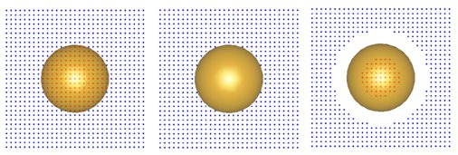

The compoint class
For the computation of electric field maps or dipole excitations one has to embed points inside the dielectric environment. This can be done with the compoint class.
Contents
Initialization
% initialize compoint object with pos = [ x( : ), y( : ), z( : ) ] pt = compoint( p, pos, op ); % provide additional arguments pt = compoint( p, pos, op, PropertyName, PropertyValue );
- p is a comparticle object that defines the dielectric environment.
- pos is an nx3 array that defines the point positions.
- op is the options structure of the MNPBEM toolbox.
Property values and names for compoint objects, which can be either defined in op or can be additionally provided in the constructor call, are
- 'mindist' sets the minimum distance between the point positions pos and the boundary of particle p. Positions that are closer than mindist are discarded from the point positions pt.pos.
- 'medium' sets the dielectric media within which points are considered. Positions in different media are discarded from the point positions pt.pos.
Upon initialization, the point object has the following properties
% cell array of dielectric materials (taken from COMPARTICLE object P) pt.eps; % cell array of points grouped together for different media pt.p; % medium index for pt.p pt.inout;
Methods
% select positions of compoint object, also works for 'polfun', 'sphfun' pt = select( pt, 'carfun', @( x, y, z ) fun( x, y, z ) ); % select points through index pt = select( pt, 'index', ind );
Expanding an array or compstruct object to the size of pos, provided in the initialization, is done through
% expand array or COMPSTRUCT object to size of POS val = pt( val ); % set discarded points to zero val = pt( val, 0 );
In this call, the values for points discarded in pt (because they are too close to the boundary or embedded in a different medium) are set to NaN. Alternatively, one can provide another value for discarded points.
Tips and tricks
When using a compoint object in combindation with layer structures, for instance for dipole simulations or the computation of electromagnetic fields, one should
- first add the layer structure to the options structure op, and then
- pass the options structure to the compoint initialization.
This procedure guarantees that all points outside the particles are properly placed within the layer structure. Points directly lying on one of the interfaces are shifted into the upper layer media.
Examples
We first compare three different calling sequences for the compoint initialization, which demonstrate the working principle of the parameters medium and mindist.
% set up a COMPARTICLE object and a set of points p = comparticle( epstab, { trisphere( 256, 10 ) }, [ 2, 1 ], 1, op ); [ x, y ] = meshgrid( 10 * linspace( - 1, 1, 31 ) ); z = 0 * x; % place the points into the dielectric media pt = compoint( p, [ x( : ), y( : ), z( : ) ] ); pt = compoint( p, [ x( : ), y( : ), z( : ) ], 'medium', 1 ); pt = compoint( p, [ x( : ), y( : ), z( : ) ], 'mindist', 2 );

In the next example we show how to embed points in the dielectric environment of a gold nanosphere, using the compoint object, and to compute and plot the electric field at the point positions for the nanosphere excited by a plane wave (you can copy the following lines and execute them under Matlab).
% BEM options op = bemoptions( 'sim', 'stat', 'waitbar', 0 ); % metallic nanosphere p = comparticle( { epsconst( 1 ), epstable( 'gold.dat' ) }, { trisphere( 144, 10 ) }, [ 2, 1 ], 1, op ); % plane wave excitation exc = planewave( [ 1, 0, 0 ], [ 0, 0, 1 ], op ); % surface charge for plane wave excitation with wavelength of 500 nm sig = bemsolver( p, op ) \ exc( p, 500 ); % grid [ x, y ] = meshgrid( linspace( - 10, 10, 41 ) ); % set up compoint object pt = compoint( p, [ x( : ), y( : ), 0 * x( : ) ], op, 'mindist', 0.5 ); % set up Green function object between PT and P g = greenfunction( pt, p, op ); % compute electric field f = field( g, sig ); % plot electric field using cones coneplot( pt.pos, f.e, 'scale', 0.5 );
Copyright 2017 Ulrich Hohenester